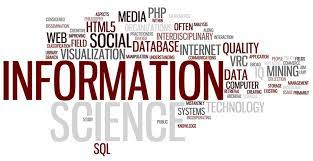

Welcome to Department of ISE
The Department of Information Science & Engineering (ISE), was established in the year 1999 . To accommodate the needs of the software industry, the Department was founded with an initial intake of 40 students. Further, the intake was increased to 60 in the year 2000 and subsequently to 120, 180 and 240 in the year 2016,2019 and 2024 respectively. This course is designed to provide a comprehensive understanding of the principles, theories, and practical applications that form the foundation of Information Science, a dynamic field at the intersection of computer science, mathematics, and engineering. This course helps the students to delve into the diverse and evolving landscape of information systems, data management, and computational intelligence. Information Science Engineering plays a pivotal role in our increasingly digitized and interconnected world, influencing the way we communicate, process information, and make decisions. The Department provides state-of-the-art facilities, where innovation meets education. The facilities are designed to provide a conducive environment for learning, research, and hands-on exploration in the dynamic field of computer science. The Department maintains strong connections with industries and facilitates internship opportunities for students. Industry partnerships provide students with real-world exposure, bridging the gap between academic learning and industry demands. With cutting-edge facilities, the Department aims to cultivate a learning environment that nurtures curiosity, fosters innovation, and prepares students for successful careers in the ever-evolving field of computer science. Over the years, the Department has placed 80–85% of qualifying students in reputable industries, demonstrating a good track record of placement. In 2019, the department of Information Science & Engineering (ISE) collaborated with ICT Academy to offer industry-based courses like Google (for Cloud and Android courses), and UiPath (for Robotic Process Automation course). Since 2020, ISE is part of Google’s Career Readiness Program. Department has a high placement rate with attractive packages and has a high-end NVIDIA server to explore more into data analytics and also has qualified and supportive faculty to cater to the needs of the aspiring students and upgrade their skills.
Vision
Excellence in information science and engineering through a strong research and teaching environment that addresses the emerging global challenges and market demands
Mission
The Department of Information Science & Engineering is committed to Provide outstanding education and research training to the students for their productive careers in industry, academia and government Provide a learning environment that promotes excellence and innovation, ethical practice and responsibility towards society Prepare the students to practice their professions competently to meet the ever-changing needs of society and to continue learning their discipline, allowing them to move into other related fields Promote active learning, critical thinking, and engineering judgment coupled with business and entrepreneurial skills